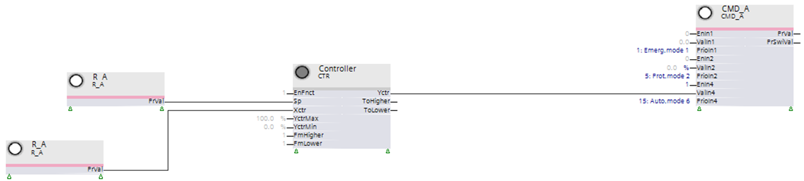
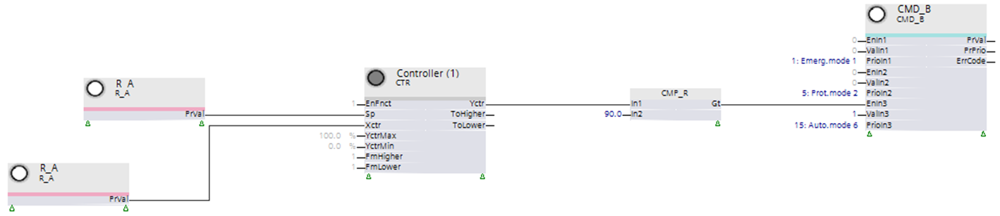
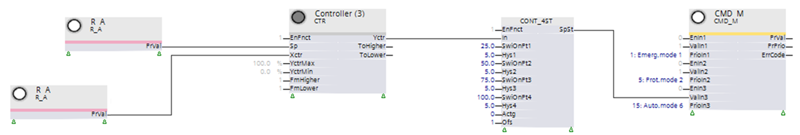
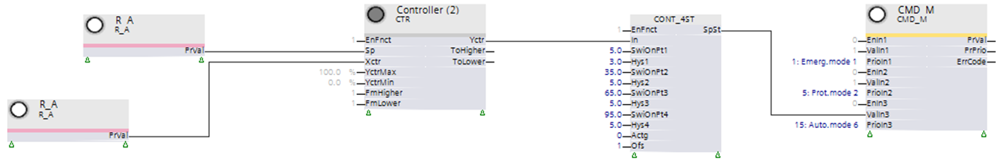

创建分阶段控件
输出块的调制控制包含在每个预定义的控制中。
预定义的工厂必须适应对工厂组件使用阶段控制。
有两种形成阶段的方法。
- Controller-internal stage formation
- Controller-external stage formation
这CTR控制器可以在内部将调制输出信号转换为开/关信号或级。
以下是可能的：
- 2-position control (on / off)
- Stage control
2-postion control
通过设置以下控制参数，在控制器内部形成 2 位控制：
- [CtrMod] Control mode = '2-position control'
开关点由迟滞 [HysSwiOn] 和 [HysSwiOff] 以及控制操作 [Actg] 进行配置。
Stage control
控制器内部阶段是通过设置以下控制器参数形成的：
- [CtrMod] = 'Modulating'
- [CtrTyp] = 'Stage control'
- [NumSts] (Number of stages) = 'X' (desired number of stages)
100 [%] 的控制范围线性分布在所需的级数中。例如，X = 4 级的开关点为 25 [%]、50 [%]、75 [%] 和 100 [%]。
阶段形成在 BACnet 上可见。
开关点不能自由选择，而是线性分布在 100/X. 上
对于控制器外部阶段，通过将控制器参数设置为调制 PID 控制器来形成：
- [CtrMod] = 'Modulating'
- [CtrTyp] = 'PID' (default value)
控制器提供调制信号（例如 0...100%）。该信号被外部控制器转换为分级信号。
开关点可自由选择，例如第 3 阶段的切换点为 65 [%]。
阶段形成在 BACnet 上不可见。
需要进行以下更改：
- Conversion of an output signal of the controller function block (0...100%) to a staged output signal. This occurs for a single-stage signal (on/off) via function block CMP_R and for a 4-stage signal via function block CONT_4ST.
- As an output block, use either a binary output block CMD_B or multistate output block CMD_M accordingly.
在工厂示例中，工厂组件根据控制器 CTR 的输出信号通过模拟输出块 CMD_A 从 0...100 [%] 发出命令。

功能块 CMP_R 从 CTR 接收各个阶段（0 [%]、100 [%]）的模拟信号，并将该信号转换为相应的二进制信号 0/1.

功能块 CONT_4ST 包含来自 CTR 的各个阶段的模拟信号（例如，阶段 0、25、50、75、100 [%]），并将其转换为相应的枚举 1...5：
- 1 = Off
- 2...5 = Stage 1...4
输入 [Ofs] 上的设置必须为 1，否则将发送枚举 0...4。输出块 CMD_M 被解释为 false。

功能块 CONT_4ST 包括来自 CTR (0-100 [%]) 的调制信号。模拟信号根据 CONT_4ST 处的设置（例如 5、35、65、95 [%]）转换为枚举 1...5 并发送到输出块 CMD_M。
输入 [Ofs] 上的设置必须为 1，否则将发送枚举 0...4。输出块 CMD_M 被解释为 false。
- At an input value below 5 [%], CONT_4ST sends enumeration 1.
The plant component is switched off. - At an input value as of 5 [%], CONT_4ST sends enumeration 2.
The first stage of the plant component is switched on. - At an input value as of 35 [%], CONT_4ST sends enumeration 3.
The second stage of the plant component is switched on. - At an input value as of 65 [%], CONT_4ST sends enumeration 4.
The third stage of the plant component is switched on. - At an input value as of 95 [%], CONT_4ST sends enumeration 5.
The fourth stage of the plant component is switched on.
如果输入值低于给定阶段设定的迟滞 [%]，则相应的阶段将再次关闭。
